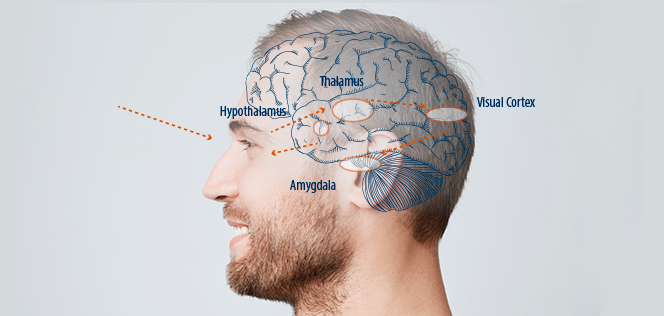

Capture of Psychological Bio Markers
BrainVu analyzes a spectrum of unique eye measurements to identify changes in alertness, attention
i.e.
mental effort. To understand the consumer’s tendency toward a certain subject by reenacting sensory and emotional experiences (such as taste, video and more) BrainVu uses
a set of questions and responses measured
by the system.
Real Time Emotional Representation
By combining the indices developed together with additional bio markers such as HRV, Gaze, facial
coding,
response time and others BrainVu has created the BrainVu Sentiment Index.
It gauges both tendency towards a specific products/touch points as well as the emotional engagement (stress excitement, mental load) of the consumer during the research experience.